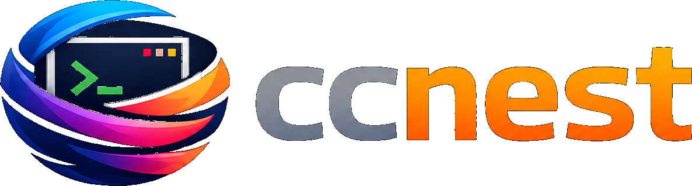

Claude Code を多重化。
煩わしさはゼロで。
Multiplex Claude Code.
Without the ceremony.
Claude Code を中心に設計したターミナル多重化ツール。プレフィックスなしの分割、ペインごとのコンテキスト使用量、遅延展開のファイルツリー（Nerd Font 不要）、そしてプロジェクト直下で claude が起動済みのペイン。
A terminal multiplexer built around Claude Code. Prefix-less splits, per-pane context usage, a lazy-expand file tree (no Nerd Font needed), and panes that actually start in your project with claude already running.
ccnest の特徴Why ccnest
プレフィックスなしで分割Prefix-less splits
Ctrl+D で右分割、 Ctrl+E で下分割。tmux のリーダーキー連打は不要です。 Ctrl+D splits right, Ctrl+E splits down. No tmux leader-key dance.
ペインは Claude 起動済みPanes start with Claude
新しく開くペインは現在のフォルダで claude --session-id <uuid> を即座に起動します。設定不要。
Every new pane spawns claude --session-id <uuid> in your current folder. No setup.
ペインごとのコンテキスト使用量Per-pane context usage
各ペインのセッションに対応する Claude Code の JSONL ログを読み、残りコンテキストをリアルタイムで表示します。 Reads the Claude Code JSONL log for each pane's session and shows remaining context live.
キーボードファーストの操作Keyboard-first navigation
Alt+矢印でタブ移動、Ctrl+矢印でペイン移動、F2 でリネーム。サイドバーでは反転白ブロックの選択カーソルが行を示します。 Alt+arrow tabs, Ctrl+arrow panes, F2 to rename. White-block selection cursor in the sidebar.
インストールInstall
ccnest は Rust 製です。最新の Rust ツールチェイン（rustup）と、Claude 連携の恩恵を受けるには claude CLI が PATH に通っている必要があります。claude が見つからない場合はシステムシェルにフォールバックするので、多重化ツールとしては動作します。
ccnest is written in Rust. You need a recent Rust toolchain (rustup) and, to actually get value from the Claude integration, the claude CLI on your PATH. If claude is not found, panes fall back to the system shell so the multiplexer is still usable.
cargo で （推奨） Via cargo (recommended)
# clone してインストール — ~/.cargo/bin に配置されます# clone & install — lands in ~/.cargo/bin $ git clone https://github.com/mitama987/ccnest $ cd ccnest $ cargo install --path .
PowerShell スクリプトで （Windows、~/.local/bin に配置）
Via PowerShell script (Windows, installs to ~/.local/bin)
> git clone https://github.com/mitama987/ccnest > cd ccnest > pwsh .\scripts\install.ps1
起動Launch
$ ccnest # cwd を最初のペインのディレクトリにする# use cwd as the first pane's directory $ ccnest path/to/project
ccnest は alternate screen で開きます。Ctrl+Q で終了、Ctrl+W で個別ペインを閉じられます。 ccnest opens in an alternate screen. Press Ctrl+Q to exit, or Ctrl+W to close individual panes.
キーバインドKeybindings
ccnest が捕捉するのは少数の修飾キー組み合わせだけです。それ以外はすべてフォーカス中のペインへ素通しされるので、Claude Code のキーバインドはそのまま使えます。 ccnest intercepts a small set of modifier-combos before the pty sees them. Everything else passes straight through to the focused pane, so Claude Code keybindings keep working.
| キーKey | 動作Action |
|---|---|
| Ctrl+D |
フォーカス中のペインを縦分割（右側に新しい claude）
Split the focused pane vertically (new claude to the right)
|
| Ctrl+E |
フォーカス中のペインを横分割（下側に新しい claude）
Split the focused pane horizontally (new claude below)
|
| Ctrl+T |
新しいタブを開き、claude ペインを起動
New tab with a fresh claude pane
|
| Ctrl+W | フォーカス中のペインを閉じる Close the focused pane |
| Alt+← / Alt+→ | 前 / 次のタブへ Previous / next tab |
| Ctrl+Tab / Ctrl+Shift+Tab | 前 / 次のタブへ（別名） Previous / next tab (alias) |
| F2 | アクティブタブをリネーム（Enter で確定、Esc でキャンセル） Rename the active tab (Enter to commit, Esc to cancel) |
| Ctrl+← / Ctrl+→ / Ctrl+↑ / Ctrl+↓ | ペイン間でフォーカスを移動 Move pane focus |
| Ctrl+F | ファイルツリーをトグル（Files セクションへ移動、すでに Files なら閉じる） Toggle the file tree (opens to Files, closes when already on Files) |
| Ctrl+B | 左サイドバー全体をトグル Toggle the entire left sidebar |
| Ctrl+1 .. Ctrl+4 | サイドバーのセクションへジャンプ（Files / Claude / Git / Panes） Jump to sidebar section (Files / Claude / Git / Panes) |
| Tab （サイドバーフォーカス時）(sidebar focused) | サイドバーのセクションを循環 Cycle sidebar sections |
| ↑ / ↓ / j / k （サイドバー）(sidebar) | 選択カーソルを移動 Move selection cursor |
| Enter （フォルダ行）(on a folder row) | 展開 / 折りたたみをトグル（子は遅延ロード） Toggle expand / collapse (loads children lazily) |
| Enter （ファイル行）(on a file row) |
$EDITOR で開く（フォールバックは code）
Open in $EDITOR (falls back to code)
|
| マウス左クリックMouse left-click （ファイルツリーの行）(file tree row) |
フォルダは展開 / 折りたたみ。ファイルは $EDITOR で開く。
Folders: toggle expand / collapse. Files: open in $EDITOR.
|
| Ctrl+Q | ccnest を終了 Quit ccnest |
| フォーカス中のペインに転送 Forwarded to the focused pane | |
| Shift+Tab |
バックタブ（CSI Z）として送信 — Claude のモード切替（default → auto-accept → plan）を駆動
Sent as back-tab (CSI Z) — drives Claude's mode cycle (default → auto-accept → plan)
|
| Shift+Enter / Ctrl+Enter |
送信せず、プロンプトに改行を挿入（ESC + CR として送信）
Insert a newline in the prompt instead of submitting (sent as ESC + CR)
|
| スクロールバック（ペインあたり 2000 行） Scrollback (2000 lines per pane) | |
| マウスホイールMouse wheel | カーソル下のペインの履歴をスクロール（1 ノッチ 3 行） Scroll history in the pane under the cursor (3 lines / tick) |
| Shift+PageUp / Shift+PageDown | フォーカス中のペインを 1 画面ぶんスクロール Scroll the focused pane one screen of history |
| Shift+↑ / Shift+↓ | フォーカス中のペインを 1 行ぶんスクロール Scroll the focused pane one line of history |
| 任意のキー入力any keystroke |
ライブ末尾までスナップ（set_scrollback(0)）
Snaps the view back to the live tail (set_scrollback(0))
|
注意: Ctrl+D は捕捉されるため、claude に EOF は送られません。Claude を終わらせるには中で /exit、または Ctrl+W で外側からペインを閉じてください。素の PageUp / PageDown は claude へ素通しで、Shift 付きの場合だけ ccnest のスクロールバックを操作します。
Heads-up: Ctrl+D is captured, so it will not send EOF to claude. Use /exit inside Claude, or Ctrl+W to close the pane from the outside. Plain PageUp / PageDown still pass through to claude — only the Shift-modified variants drive ccnest's scrollback.
settings.json でこれらを削除またはリバインドして、ccnest にキーが届くようにしてください。
Windows Terminal users: WT's default keybindings for Ctrl+T (new tab), Ctrl+D (split pane), Ctrl+W (close pane), and Alt+←/Alt+→ (prev/next tab) intercept these keys before they reach ccnest. Remove or rebind them in settings.json so ccnest sees them.
ステータスとロードマップStatus & roadmap
ccnest は v0.1.1 — Windows 優先、Rust 製、シングルバイナリです。コアループ（分割 / フォーカス / サイドバー / Claude JSONL パース）は安定しており、テスト済み。プロダクションソフトウェアではないので、Windows 以外のターミナルや変則的な PTY 構成では尖った挙動を予想してください。 ccnest is v0.1.1 — Windows-first, Rust, single binary. The core loop (split / focus / sidebar / Claude JSONL parsing) is stable and tested. Not production software; expect sharp edges around non-Windows terminals and exotic PTY configurations.
- v0.2 — macOS / Linux 対応、設定ファイル、テーマ、セッションの保存と復元。 v0.2 — macOS / Linux support, config file, themes, session save/restore.
- v0.3 — リッチなマウス対応（ドラッグでリサイズ、クリックでフォーカス）、プラグイン、サイドバーへの git diff プレビュー。 v0.3 — richer mouse support (drag-to-resize, click-to-focus), plugins, git diff preview in the sidebar.